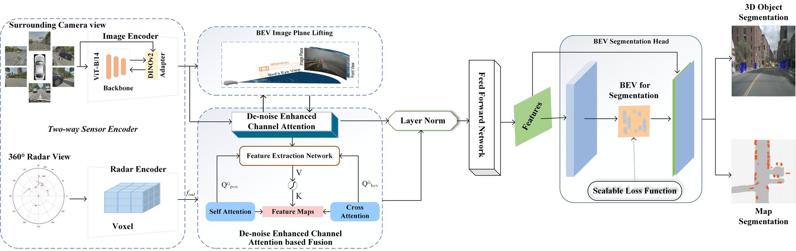
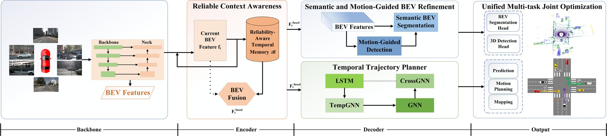

Research
Perception, calibration and state estimation for embodied robots
Making robot perception measurable rather than merely accurate — through multi-sensor fusion, calibration and state estimation for machines that have to localize, map and avoid obstacles in real environments — is the thread that runs through my work. As an incoming PhD student at the Department of Automation, Tsinghua University, I keep returning to two questions that have turned out to be the same one: how much of a representation can be trusted, and where does the error come from? In autonomous driving I build Bird's-Eye-View perception that stays accurate on noisy sensors and small compute budgets, treating two kinds of reliability separately — how clean a measurement is, and how much history to trust — while in industry I work on vision–inertial localization, where absolute and relative trajectory error, tracking success rate and resource utilization let me measure reliability instead of claiming it. Drifting calibration, accumulated localization error and depth that fails on glass or thin structures are, in the end, one problem showing up at three points of a single pipeline.
BEV Perception and Planning
My track record is in Bird's-Eye-View perception for autonomous driving: building unified detection, segmentation and planning on a shared representation, and asking at each stage how much of that representation can be trusted.

ECABEV replaced BEVCar's heavy deformable attention with de-noise channel attention, a scalable cross-entropy loss and a bilinear interpolation layer-normalization design. De-noise channel attention combines global average and max pooling to emphasize informative channels while filtering noisy ones; the scalable loss dynamically prioritizes rare classes by frequency and complexity; BLN preserves spatial coherence across modalities while reducing overhead. The result was state-of-the-art accuracy under tight GPU-memory budgets, in rain, at night and on fuzzy inputs.

RCT-AD asks the same reliability question over time rather than over channels: short-term sensory and long-term instance banks preserve high-quality BEV features and filter noisy inputs, a temporal trajectory planner uses recurrent attention to model long-horizon dependencies, and unified multi-task optimization ties detection, segmentation, prediction, planning and mapping together. On nuScenes it reaches 52.3 mIoU (R101, 512×1408) and 0.54 m average L2 displacement with a 0.06% average collision rate.
T-GeoBEV studies temporally consistent, geometry-aware panoramic BEV semantic mapping: explicit depth-based lift-splat-project replaces an implicit learned transform, a ConvGRU aggregates multi-frame BEV features, and a distortion-aware panoramic encoder injects spherical coordinate embeddings to mitigate equirectangular artefacts — so a single panoramic image yields a stable BEV map.
RESAR-BEV, a collaboration in which I am a co-author, advances beyond single-step end-to-end BEV segmentation with progressive residual-autoregressive refinement, reaching 54.0% mIoU over seven driving-scene classes at 14.6 FPS.
Evaluation and Deployment
Accuracy on a benchmark and safety in deployment are not the same measurement, so both have to be reported. In my current role I build automated evaluation for vision–inertial odometry: data loading, execution, trajectory alignment against ground truth, ATE and RPE, tracking success rate and resource utilization, together with the boundary cases that a single averaged number hides. For BEV work the equivalent is mIoU per class under rain, night and occlusion, and ablations that isolate which component is responsible for a gain.
Collaborative Work
Beyond autonomous driving I contribute to medical image analysis, remote sensing and quantum federated learning — projects that taught me to move between application domains without losing methodological discipline, and that share the same interest in reliability under degraded inputs.
- Medical image analysis — colonoscopy video polyp segmentation with quality-aware memory and prototype alignment (MICCAI 2026); brain-tumour segmentation under incomplete modalities with reliability-aware disentanglement (IEEE JBHI) and token-pruned Mamba fusion (EAAI); language-guided segmentation with sparse text supervision (Pattern Recognition); semi-supervised fracture-risk prediction (BSPC); bidirectional pyramid polyp segmentation (BSPC).
- Remote sensing — bi-temporal SAR flood segmentation as temporal state-transition inference (Information Sciences); dual-stream optical–topographic landslide segmentation (Computers, Materials & Continua).
- Federated and quantum learning — distribution-aware hybrid classical–quantum federated learning for calibrated long-tail medical classification (World Wide Web).